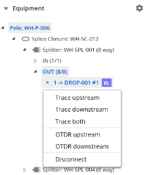
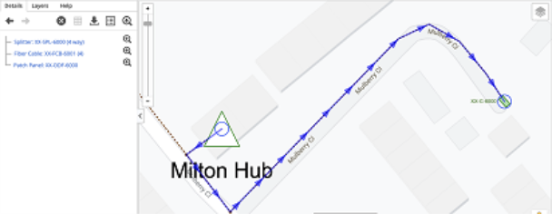

To perform tracing:
Select the structure containing the required equipment.
In the Equipment tree, find the required equipment, and then right-click on the appropriate port. The context menu is displayed.

Figure: Tracing context menu
Click one of the following:
Trace upstream: The signal path is traced and highlighted on the map. For example, the following screenshot shows the connection for the port being traced to Patch Panel: XX-ODF-6000.

Figure: Tracing upstream
Trace downstream: The destinations are traced and highlighted on the map.